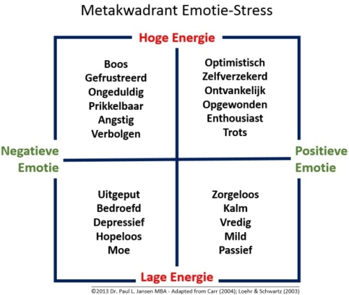

Stress is de (onnodige*) combinatie van negatieve emoties en
automatische, biologische reacties
daarop, wat zich
vertaalt naar gedrag. De
hoeveelheid energie achter de negatieve emotie bepaalt
onze stressbeleving en de gevolgen daarvan. In het overzicht
hieronder is weergegeven hoe de automatische emotionele reactie op
'iets' uit onze omgeving, maar ook uit ons eigen brein (gedachten),
tot een combinatie tussen die emotie en een bepaalde hoeveelheid
energie leidt. De emotie bepaalt of deze 'gezond' of 'ongezond' is;
de hoeveelheid energie bepaalt de mate waarin.
Wat we met 'stress' bedoelen staat links en
is altijd
schadelijk maar
vooral bij 'hoge energie'. Bij voorkeur en bewust gestuurd streeft
de mens naar allerlei omstandigheden die 'de automatische,
biologische reacties' opleveren die rechts staan; die gezond zijn.
Sommigen noemen dat ook wel 'positieve stress', maar dat is erg
verwarrend: Stress is altijd negatief en de rechtse reacties zijn positief en
wisselend van energie.

N.B. *Negatieve emoties gecombineerd met hoge
energie zijn in bepaalde omstandigheden per saldo 'gezond',
bijvoorbeeld wanneer we grote angst ervaren bij een
levensbedreigende situatie en juist dankzij deze grote stress
daarvan wegvluchten (en overleven). Emoties en automatische
biologische reacties zijn precies voor dat soort omstandigheden
bedoeld.
Dit boek is voortgekomen vanuit mijn fascinatie
met Stress. Wat is Stress? en vooral; waarom is (er) Stress? En
uit mijn overtuiging
dat Stress (inclusief stress als gevolg van verkeerde voeding) de
oorzaak is van bijna alle (zoniet alle)
ziektes: stress
is de oorzaak van ongezondheid, en dat het voorkomen en/of oplossen van stress
de oorzaak van ongezondheid wegneemt...
Als Hoofdmens kun je Stress niet structureel
oplossen, alleen het Hart biedt oplossingen voor de destructieve
gevolgen van Stress en het Hart biedt mogelijkheden om Stress te
voorkomen.
Bottum-up stress kan gelukkig top-down vanuit het
hart worden bestreden, zelfs op verschillende manieren, zie
verderop.
Stress op zichzelf bestaat overigens niet. Stress
(negatief) is wat de bestaande programma's ergens van maken, dus de
gevolgen van bepaalde interpretaties, oordelen of gedachten: de
zaken van Hoofdmensen. Onderzoek van het HeartMath Institute* heeft
uitgewezen dat een positieve emotionele toestand van echte liefde,
zorg, waardering en medeleven orde schept (ofwel: coherentie) in
het ritmische (elektromagnetische) kloppend patroon van het hart.
En het omgekeerde is ook waar: negatieve emotionele toestanden
zoals angst, woede en haat zorgen voor een chaotisch
hartritmepatroon (incoherentie). Onderzoekers hebben ook ontdekt
dat de orde of chaos in ons hartritmepatroon ons hele lichaam tot
op het cellulaire niveau (hormonale, immuun- en DNA reacties)
beïnvloedt terwijl onze emotionele energie uitstraalt tot
buiten ons lichaam en tot 'in' andere mensen die in de buurt
zijn.
_______________________________________________
* (R.
McCraty, M. Atkinson, D. Tomasino, W.A. Tiller. In: K. H. Pribram,
ed. Brain and Values: Is a Biological Science of Values Possible.
Proceedings of the Fifth Appalachian Conference on Behavioral
Neurodynamics. Mahwah, NJ: Lawrence Erlbaum Associates, Publishers,
1998: 359-379. Russek, L. and Schwartz, G. Interpersonal
Heart-Brain Registration and the Perception of Parental Love: A 42
Year Follow-Up of the Harvard Mastery of Stress Study. Subtle
Energies 1994; 5(3):195-208. Russek, L. and Schwartz, G.
Interpersonal Heart-Brain Registration and the Perception of
Parental Love: A 42 Year Follow-Up of the Harvard Mastery of Stress
Study. Subtle Energies 1994; 5(3):195-208.